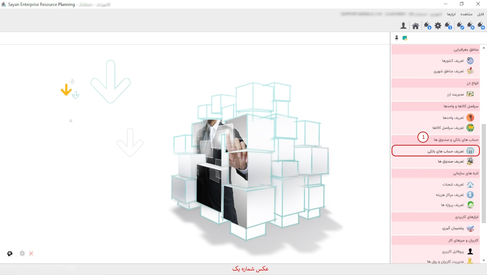

این گزینه به شما امکان ایجاد و گروه بندی حساب های بانکی را می دهد پیشنهاد می شود ابتدا حسابهای بانکی خود را گروه بندی کنید، سپس حسابهای مربوط به هر گروه را در درون آن تعریف نمایید، برای تعریف گروه یا ایجاد حساب بانکی از نوار ابزار گزینه ی اضافه یا F8 را بزنید، تصویر زیر نمایان می شود:
در تصویر بالا درون کادر سبز رنگ دو گزینه مشاهده می کنید که گزینه ی اول مربوط به ایجاد گروه و گزینه ی دوم مربوط به ایجاد حساب بانکی می باشد، برای ایجاد گروه کافی است اطلاعات فرم بالا را تکمیل کنید و گزینه ی تایید را بزنید برای ایجاد یک حساب بانکی در درون یک گروه روی گروه مورد نظر دوبار کلیک کنید، از نوار ابزار گزینه ی اضافه یا F8 را بزنید، گزینه ی حساب بانکی را انتخاب کنیدو پس از تکمیل اطلاعات مربوط به آن گزینه ی تایید را بزنید، حساب بانکی در درون گروه ایجاد خواهد شد.